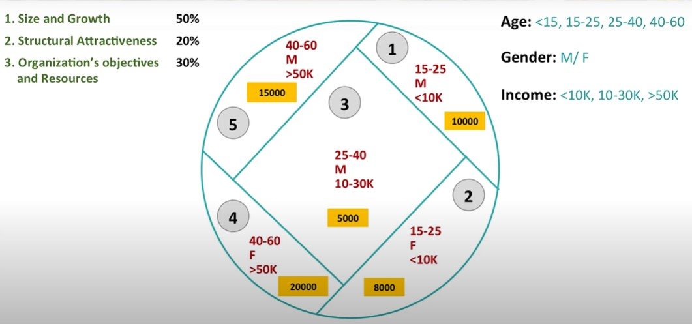
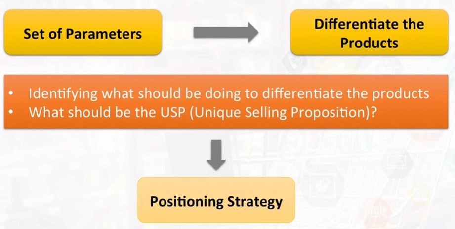
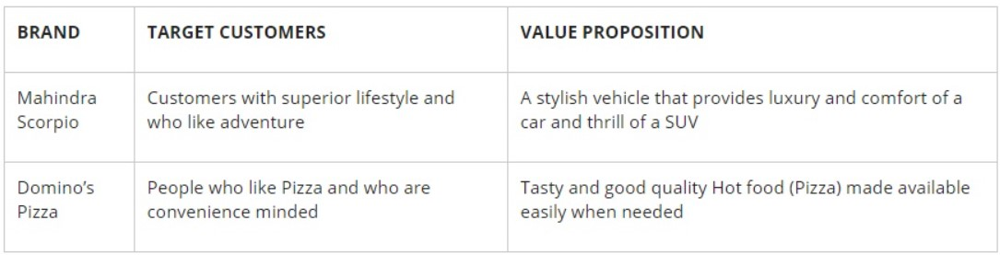
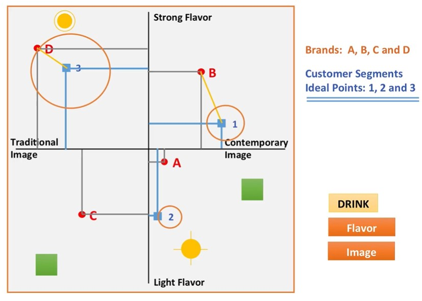
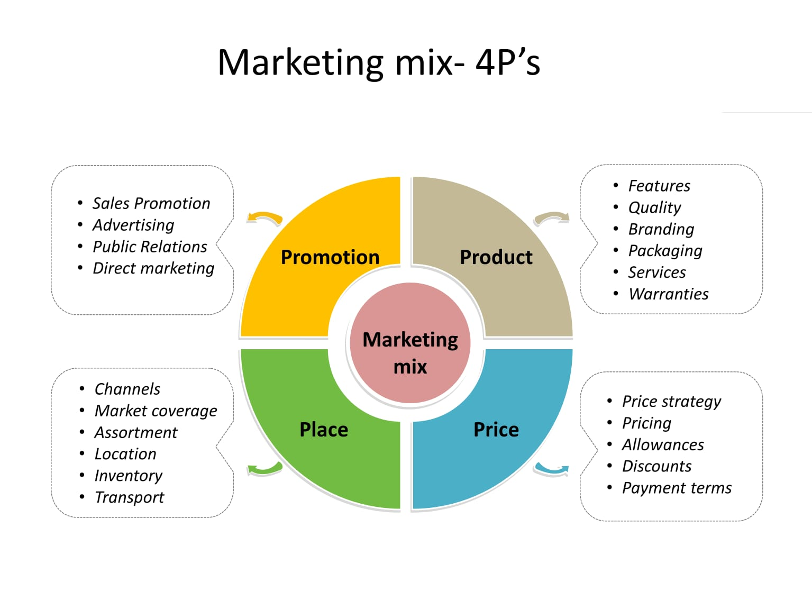

Introduction to marketing essentials
Week 1: What is Marketing
Introduction to Marketing
Definition of Marketing
Entities that can be marketed
Marketing from an organization's viewpoint
Types of markets
Difference between marketing and selling
Week 2: Segmentation and Targeting
Concept of segmentation
Bases for segmentation
Targeting
Targeting strategies
Week 3: Differentiation and Positioning
Introduction to Differentiation and Positioning
Differentiated, Undifferentiated and Niche marketing
Differentiation parameters
Competition
Positioning
Week 4: Marketing Strategy – I: Product and Price
Meaning and levels of product
Product classification
Product mix concept
Brand and brand decisions
Introduction to Pricing
Pricing decisions
Week 5: Marketing Strategy – II: Place and Promotion
Introduction to Distribution
Distribution channels
Channel design and management
Introduction to Promotion
Promotional vehicles
Product life cycle
Reference book : "principles of marketing by philip kotler"
Week 1 : What is Marketing
Marketing definition by Kotler : Marketing is a societal process by which individuals and groups obtain what they need and want by creating,
offering and freely exchanging products and services of value with others
1. Societal Process, A society survives by consuming (food,electronics, vehicle). Seller supply the goods for consuming. Marketing in
a way its helping the society so its defined as societal process
2. Customers have their requirements(Needs and Wants).
Need: feeling of not having some basic necessities (Hunger). It's an emotional thing
Want: satisfy your need (Pizza/Rice). it's a material
3. Individuals and Groups, Individuals having individuality and groups have collective individuality similarly the need and want will be different
4. Creating, Offering and Freely Exchanging
Creating if the customer requirement is not available, then this needs to be created like (iPhone with UPI option). Procuerment is in a way it's
creating.
Offering informing the customer about the creation(product), where it is available(store,web) at what price(price tag). Offering includes
Product,Price,Place and Promotion.
Freely Exchanging seller and customer should have alternatives to do the exchanging.
5. Products and Services anything that satisfies your needs. the WANT part. Product is tangible and service is intangible.
The exchange will happen only when the total utility is the more than the total cost
What is total utility? Total utility is the aggregate amount of satisfaction or fulfillment that a consumer receives through the consumption of a
specific good or service.
TU = U1 + MU2 + MU3 in this (TU = Total Utility, U = Utility, MU = Marginal Utility)
Utility = machine, Concenience = opportunity to avoid physical exertion, Tangible cost = cost of goods, Intangible cost = time + energy + resources spend
to finally decide the product
Marketing
- helps in introducing new products that eases or enriches people’s lives
- creates new opportunities in the market where ever there is any shortcomings or necessity
- helps in creating demand for products and services, which, in turn, creates jobs
- contributes in improving the economic condition of lower level of society by converting social issue into a business opportunity thereby creating
win-win situation to both organisations and the society
Marketing management art or science
Why art, it is this intuition combined with imagination, motivation and practice that makes marketing management possible.
Why science, relies on data and numbers to arrive at workable decisions, choosing the merchandise daily and price fixation are part of science.
Marketing management from an organizational view point
Marketing is the process of planning and executing the conception, pricing, promotion and distribution of
idea, goods and services to create exchanges that satisfy individual and organizational goals.
View point difference on definition
Kotler's definition is only from a customer view point
Organizational definition is from consumer and organizational point of view.
Entities that can be marketed
- Goods
- Services
- Events
- Experiences
- Persons
- Places
- Properties
- Organizations
- information
- Ideas
Types of Markets
- Consumer market, The products that is used by the consumer for their own consumption
- Business market, The purchase is bulk, output of one firm goes either as raw material or as processed or consumable goods into another industry.
Buyers buy goods to resell at some other point of time for profit
- Institutional market, The purchase is bulk, but it is not for any profit motive or not for reselling. For example, hotels, schools, universities etc
Difference
- Marketing - starts from the customer (Eureka Fobes comes to customer)
- Selling - starts from the manufacturer (tele-sales)
Just an extra note
For a product to be successful, its very important that it is communicated in
- right Way
- right Place
- right Time
- right People
What are the sellers duty ?
- Buy the items according to the customer requirement
- Arrange those items in an attractive order
- Wait for the customer visits
Week 2 : Segmentation and Targeting
Segmentation, the process of dividing the market into various homogeneous(ഒരേ പോലെയായ) groups based on some common parameters is called
segmentation. Segmentation helped in identifying the potential customers.
Bases of Segmentation, Set parameters to form a segmentation is called bases of segmentation.
Targeting, Among the multiple segments, focusing on one or a few segments is called targeting.
Differentiation, How to differentiate your product from your competitor in the target segment.
Positioning, communicating your differentiation to the target market.
Segmentation exercise
first we need to identify the differentiation about the product. Based on this we need to create the bases of segmentation and subsequently
closing on to the targetted segment.
Different bases of segmentation, marketing managers use certain bases to segment the market.
- Geographic Segmentation (ഭൂമിശാസ്ത്രപരമായ വിഭജനം), What aspect of customers, places where the consumer stay (rural or urban). Region, city size,
density of population, climate
- Demographic Segmentation (ജനസംഖ്യാപരമായ വിഭജനം), Who aspect of customers, vital and measurable statistics of human population. Vital(births,
deaths, fetal deaths, marriages) and measurable (age, income, education, occupation).
- Psychographic Segmentation (മനഃശാസ്തപരമായ വിഭജനം), Why aspect of customers, psychology+demography to better understand customers (lifestyle,
their activities, interests, personality, likes and dislikes etc).
- Behavioral Segmentation (പെരുമാറ്റം വിഭജനം), How aspect of customers, behavior with respect to their purchase and usage of the products.
-- Needs and Benefits, what customers needs (in lock, its safety) and what are the benefits (jewelry) they can expect from the product.
-- Decision roles, the roles the consumers play during the purchase decision, like initiator, influencer, decider, buyer, and the user .
-- User and Usage pattern, (concerning existing customer base not new coustomer)
--- User status, either you are an user or you are an non user
--- Buyer readiness, different stages like
---- Not aware, not aware about the product
---- Aware, aware about the product
---- Not informed, who is aware but not formed an opinion about the product
---- Informed, aware and formed an opinion about the product
---- Not interested, informed but not developed an interest to buy the product
---- Interested, developed an interest but not enough intention to buy the product
---- Intention to buy, interested and intends to buy
--- Usage rate
---- Heavy user, somebody uses shampoo two times or three times a day
---- Light user, somebody uses shampoo once a week
--- Loyalty status, loyalty a strong feeling of support or allegiance to a brand
---- Hard-core Loyals, who buy the same brand all the time
---- Split Loyals, loyal to two or three brands
---- Shifting Loyals, moving from one brand to another
---- Switchers, with no loyalty
--- Purchase occasion, that is, special occasion like festivals or office party or your regular purchase
Another definition for bases for segmentation
- Demographics: Things like the age, gender, income, marital status, ethnicity, employment status, etc., of your buyers.
- Geographics: Where your customers are located (this can be as wide as entire continents, or even just a single neighborhood or street).
- Psychographics: What drives your customers? What are their likes and dislikes? What problems do they face in their lives?
Often we see products based on demography,
- Harley Davidson for male
- Hero Honda Pleasure for girls
- TAG Heuer watches for affluent class
- Colgate coming up with Spider man and Barbie toothpastes for boys and girls
- Johnson baby oil for the kids
One of the most popular commercially available classification system based on psychographic measurement is Strategic Business Insight’s VALS framework.
VALS stands for Values And Lifestyle
framework. VALS classifies US adults into eight primary groups.
- Innovators - are those who are successful, sophisticated, active, take charge kind of people with high self-esteem
- Thinkers - are mature, satisfied, and reflective people motivated by ideals, and who value order, knowledge, and responsibility. They seek durability,
functionality, and value in product
- Achievers
- Experiencers
- Believers
- Strivers
- Makers
- Survivors
While their usage and application are quite intuitive
Education, Occupation, and Income together are called the triple indicators of the lifestyle
Conditions for effective segmentation
- Total market should be heterogeneous(ഒരേ പോലെയല്ലാത്ത) and homogeneous(ഒരേ പോലെയായ) with in the identified segments
- There should be enough potential customers in each of the identified segments
- Customers within the segment should be willing and ability to buy the product
- Marketers should be able communicate effectively with the target segment
Introduction to Targeting
Targeting? is a process of selecting the target segment(one specific segment or two-three segments). This target segment is most likely to want or need
a business's products or services
Target segment selection criteria
- Segment size and growth, these criteria is significant because it tells you how much of resources you need to invest and what is the return (5% or 10% market
share)
-- size indicates the current size in terms of number of consumers in that segment
-- growth in two years’ time, how these size is going to be grow
- Structural attractiveness
--Number of competitors (less, it is attractive & more, it is not attractive)
--Entry barriers, how easy it is to enter into the market ie, need government permissions, patents, R&D, huge investment for land, Huge investment for manpower
--Exit barrier, how difficult it is to leave the market ie, lot of fixed assets(got land, got machinery, got industry), lot of customers who are looking
forward to you
- Organization's own objectives and deployment of resources(man, machine, material, money) to make the process work
Normally use the Michael Porter's Five Force Analysis Model for deciding the structural attractiveness
- Threat of new entrants
- Threat of intense segment rivalry
- Threat of substitute products
- Bargaining power of the consumers(consumer market)/buyers(B2B market)
- Bargaining power of the suppliers
Ideal market for you to enter, threat of new entrant is less, threat of intense segment rivalry is less, threat of substitute products are not there,
bargaining power of buyer as well
as supplier is low
Targeting Strategies
- single segment concentration, focusing on one segment;
- selective specialization, which means you are focusing on two or three segments which are apparently not related with each other;
- product specialization, one product satisfying all the different markets;
- market specialization, you are looking up to the needs and wants of one total market in different stages;
- covering the whole market
example
hypothetical company which has 3 product lines
cosmetics
apparels
shoes
segments
- teens(13-19), female
- adults(25-35), ladies
- elders(more than 50), ladies
bases of segmentation
- age (constant)
- gender (females)
- single segment concentration
cosmetics for adult ladies which is single segment concentration
- selective specialization
cosmetics for adult ladies, apparels for the elder ladies, shoes for teens which is selective specialization
- product specialization
cosmetics for 3 different markets(teens, adult ladies, elder ladies) which is product specialization. Example for this strategy Lakme, Maybelline,
and most life style products brands.
- market specialization
all products(cosmetics, apparels, shoes) only for adult ladies which is market specialization. Example for this strategy luxury products like Gucci,
Prada, Pierre Cardin, Dolce & Gabbana.
- full market coverage
same product I am offering to the whole market. products which is having monopoly and commodity products like milk,rice etc.
Just an extra note
Difference: a commodity is a raw material used in the production process to manufacture finished goods, while a product is a finished good sold to
consumers. No value is added to a commodity, which can be grown, extracted, or mined.
Frame of reference

Summary
- The process of dividing the market into various homogeneous groups based on some common parameters is called 'Segmentation'
- There are four fundamental bases for segmentation of consumer market. They are as follows: (1) Geographic, (2) Demographic, (3) Psychographic and (3) Behavioral
- The different geographic variables for segmenting consumers are as follows: region, city size, density of population and climate
- The term 'demographics' indicates vital and measurable statistics of human population
- Some of the often-used demographic variables are as follows: age, gender, marital status, education, occupation, income and family size
- Segmentation based on the internal self of consumers is known as psychographic segmentation
- While demographics provides the marketer with the 'who' aspect, psychographics provides the 'why' aspect
- Behavioral segmentation divides a population based on their behaviour, with respect to their purchase and usage of the products
- Targeting means selecting one or more identified segments and concentrating on those segments rather than the whole market
- The criteria for selecting target market are: segment's size and growth, segment’s structural attractiveness and organization’s objectives and resources
- The various targeting strategies are as follows: single segment concentration, selective specialization, product specialization, market specialization and full
market coverage
Week 3 : Differentiation and Positioning
Differentiation It is the act of designing a set of meaningful differences to distinguish the company’s offerings from competitor’s offerings.
Differentiated Marketing, different strategy for every segment. The process of dividing the market into various homogenous groups, identifying the specific
requirements of the said homogenous groups and coming up with meaningful and distinct offering for each of the target groups is called differentiated marketing.
Undifferentiated Marketing or mass marketing, one strategy for all segments. Assumes lack of significant differences among the consumers and develops one offering
(4P - product, price, promotion, and place) for the whole market. For more than 90 years, Coca-cola offered only one product version to the whole market.
Niche Marketing, identify a specific subset with in an segment called niche segment. The product will have its own specific needs, preferences, and identity. Most
luxury marketes are niche market
Just an extra note
Satisfaction, is the main point the customer will consider most before buying a product
ME-TOO kind of products, not having a good differentiation with other competitors.
USP, unique selling proposition, defines all the logical reasons to buy. Example "you get fresh, hot pizza delivered to your door in 30 minutes or less or it's free".
ESP, emotional selling proposition, defines all the emotional reasons to buy. Example "Gillette: The best a man can get"
Unique, in a competitive market all the firms, needs to have an offering that is unique – significantly different from others. Otherwise, it will have one of
the “me-too” kind of products, suffer from consumer confusion and finally perish from the market. At one extreme, we have products that allow very little or no variation such
as salt, sugar, pulses, etc, (undifferentiated marketing or low differentiation). At the other extreme, we have products capable of high differentiation such as automobiles,
furnitures, mobile phones, etc.
Identifing the differentiation and positioning the products

Differentiation parameters
Product differentiation, how marketers can differentiate based on the product attributes
- Forms like size, shape, colors, flavors and so on and so forth
- Features like camera in a mobile phone
- Performance like how the product will perform
- Conformance to international standards like quality, promises given in the advertisements or in the promotional campaigns
- Durability like measure of product's expected operating life
- Reliability means ease of fixing a malfunction
- Style/Design describes the product's aesthetics, look and feel and so on and so forth to the buyer
- so on and so forth
Service differentiation
- Ordering ease, how easy it is for the customers to place an order with the company
- Delivery, includes speed, accuracy, and care throughout the process of delivery
- Installation, refers to the ease of making product usable once it is purchased
- Customer training, educating the customer regarding the products usage
- Customer consulting, experts/consultants(sales person or company executives) who are trying to solve your problems
- Maintenance and repair, the AMC(annual maintenance contracts) for high value electronic items are as important as the items themselves
Personal differentiation, better trained salespeople exhibit 6 significant characteristics
- Competence (കഴിവ്)
- Courtesy (മര്യാദ)
- Credibility (വിശ്വാസയോഗ്യമായ)
- Reliability (വിശ്വാസയോഗ്യമായ)
- Responsiveness (പ്രതികരണം)
- Effective communication
Channel and Image differentiation,
- The channel through which the product or the service that reaches customer
+ Direct selling
+ Catalog direct
+ Network marketing
+ Value-added resale
+ Digital advertisements
+ Events
+ SEO marketing
+ Email marketing
+ Indirect marketing
- The image as perceived by the consumer. The image can be created through effective communication and brand building
+ Advertisements
+ Promotions
Competition, In marketing, a competitor is anyone, who provides the same offering(4Ps) to the same target segment.
Levels of competition
- Brand level, (competition between only Coke and Pepsi) both the brands are comparable, offer similar kind of products, at similar price,
using similar distribution network, and same type of communication media, to the same set of target consumers.
- Industry level, (competition with all players only in Aerated Soft Drink Industry) little higher than the brand level. Aerated soft
drink industry (all fruit juice or soda), rather than only Coke or Pepsi
- Firm/Form level, (competition with all players in Drinks Market) even higher level all the palyers in this market. All the palyers in
the drinks market like coconut water, tea and coffee will quench their thirst.
- Generic level,(competition with those players - what you can buy with that same resource) very high level. Coke and Pepsi charges Rs 10,
so lime soda is a competitor or movie or even samosa.
Just an extra note
The marketer needs to define at the level in which the competition is significant accordingly create the strategy. So, the differentiation, depends
upon the level of competition.
Positioning, the creation of the positive imagery in the mind of the target consumer to maximize the potential benefit to the firm is called
positioning
Deciding a positioning requires
- Determining a Frame of Reference, specifies the various other brands with which a brand competes and then defines which brand should be the focus of
competitive analysis
- Identifying the optimal Points of Parity(POP) and Points of Difference(POD) ie similarity and dissimilarities
- Creating a Brand Mantra to summarize the positioning and essence of the brand. The purpose of brand mantra is to ensure that all the employees and
all the external partners, they understand what the brand represents, so that they can communicate to the consumer, and adjust their actions accordingly.
Value proposition indicates what value are you proposing(that logic, that argument, that reason) to the target market. Why the target market
should buy your product. Successful creation of a value proposition is the result of an effective positioning.

Just an extra note
For successful positioning, marketers should define and communicate the similarities and dissimilarities.
Through your communication, through your marketing strategy, you make them believe that this is what is most significant for them, or this is what is
most compulsive an argument for them.
Perceptual Mapping, is a diagrammatic technique used by marketers to visualise (potential) customers’ perceptions and opinions about products,
product lines or brands. A perceptual map can also be used to represent a company’s situation relevant to the competition.
is a pictorial representation of the frame of reference and the POP and POD. So, what happens over here, let's say,
example, two parameters are
flavor
strong flavor
light flavor
image
traditional
contemporary

Summary
- Differentiation is the act of designing a set of meaningful differences to distinguish the company’s offerings from competitor’s offerings.
- Undifferentiated marketing assumes the lack of significant differences among the consumers and their requirements.
- A niche market is the subset of one identified segment on which a specific product is focused.
- Differentiation Parameters include product differentiation, service differentiation, personnel differentiation and differentiation based on channel
and imagery.
- A ‘Competitor’ is anyone who provides the same offering to the same target segment.
- Types of competition include brand level, industry level, form level and generic level competition.
- Positioning means creating a positive image in the minds of consumers.
- Deciding on a positioning requires:
(1) Determining a frame of reference
(2) Identifying the optimal points of parity and points of difference
(3) Creating a brand mantra to summarize the positioning and essence of the brand
Week 4
Marketing strategy
Marketing mix refers to the actions or strategies or tactics a company uses to promote its brand or product in the market. A typical marketing
mixing are 4Ps
- price strategies
- product strategies
- promotion strategies
- place strategies

Marketing strategy is about achieving your marketing objectives through proper analysis of the marketing mix namely 4Ps
Product, It is a major carrier of consumer value. To achieve market leadership, firms must offer products of superior quality that provide unsurpassed
customer value.
Week 5
Customers class can be defined based on the need and want.